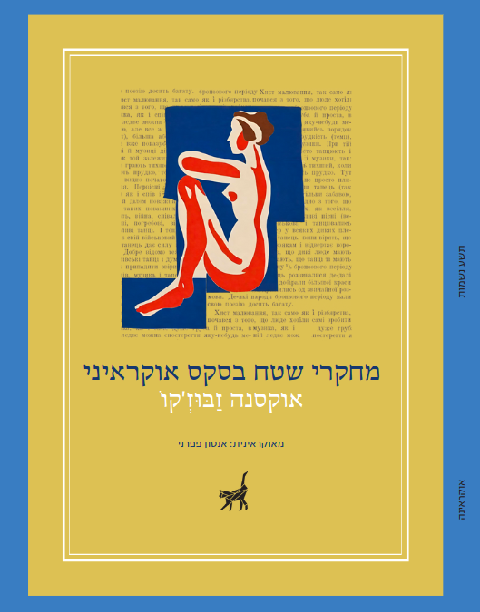
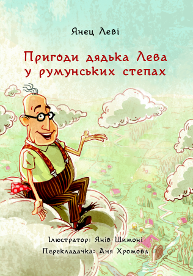

מה חדש?
24 באוקטובר 2025: "לָמָּה, מִלָּה, לֹא חַדָּה כְּמוֹ פְּלָדָה אַתְּ?" – מבחר השירה האוקראינית, כרך א: מִסְּקוֹבוֹרוֹדָ֫ה עַד פְרַנְקוֹ֫, רואה אור!
האנתולוגיה כוללת שירים מאת היוצרים והיוצרות הבאים: הריהורי סקובורודה, איוון קוטליארבסקי, פטרו הולאק־ארטמובסקי, מרתה פיסארבסקה, לבקו בורוביקובסקי, ויקטור זאבילה, יבהן הרבינקה, אמברוסי מטלינסקי, טאראס שבצ'נקו, מיכיילו פטרנקו, אולכסנדרה פסיול, אולכסנדר קורסון, פנטליימון קוליש, לאוניד הליבוב, אנטולי סוידניצקי, אוסיפ־יוריי פדקוביץ', מיכיילו סטאריצקי, קתרינה סוקולובסקה, מרוסיה וולבצ'יבנה', בוריס הרינצ'נקו, פאבלו הראבובסקי, לידיה סוחצ'בסקה, לסיה אוקראינקה, נדיה קיבאלצ'יץ' ואיוון פרנקו.
תרגום: אנטון פפרני. הספר יהיה זמין לרכישה החל מ-1 בינואר 2026. ניתן לבצע הזמנות מוקדמות על ידי פנייה למו"ל בכתובת: info@persimmon-books.com
Що новенького?
24 жовтня 2025 року: «Слово, чому ти не твердая криця»: Антологія української поезії, том I: від Сковороди до Франка, надруковано!
До антології ввійшли поезії українською таких авторів та авторок: Григорій Сковорода, Іван Котляревський, Петро Гулак-Артемовський, Марта Писаревська, Левко Боровиковський, Віктор Забіла, Євген Гребінка, Амвросій Метлинський, Тарас Шевченко, Михайло Петренко, Олександра Псьол, Олександр Корсун, Пантелеймон Куліш, Леонід Глібов, Анатолій Свидницький, Осип-Юрій Федькович, Михайло Старицький, Катерина Соколовська, Марія Вольвач, Борис Грінченко, Павло Грабовський, Лідія Сохачевська, Леся Українка, Надія Кибальчич та Іван Франко.
Переклад: Антон Паперний. Книга буде доступна для придбання з 1 січня 2026 року. Передзамовлення можна зробити, написавши видавцеві: info@persimmon-books.com
4 בדצמבר 2024: לפני הקרנת הסרט האוקראיני "בניין סלובו"
בתל אביב קרא אסף ברטוב את תרגומו
העברי של אנטון פפרני לשיר "באבי יאר" מאת מיקולה באז'אן
(1943).
5 ביוני 2024: הספר "מחקרי שטח בסקס
אוקראיני" מאת אוקסנה זאבוז'קו, בתרגום אנטון פפרני, ראה אור
בהוצאת תשע נשמות. הספר זמין בהנחה ישירות
מההוצאה, ודיגיטלית באתר
"עברית".
4 грудня 2024 року: перед показом українського
фільму «Будинок "Слово"» у Тель-Авіві, Асаф Бартов прочитав вірш «Яр» Миколи Бажана (1943),
перекладений івритом Антоном Паперним.
5 червня 2024 року: роман «Польові
дослідження з українського сексу» Оксани Забужко, перекладений
івритом Антоном Паперним, уже надруковано! Його можна придбати у
книгарнях Ізраїлю та у
видавця.

6 ביולי 2022: פרסמנו הרפתקה של הדוד אריה באוקראינית! הסופר האהוב ינץ לוי חבר אלינו כדי להעניק מתנה לילדי אוקראינה והוריהם בתקופה קודרת זו. כולכם מוזמנים להוריד, לשתף, ולשלוח את הקבצים הדיגיטליים לכל דובר אוקראינית שאתם מכירים, באהבה מישראל. הקבצים להורדה כאן בדף זה.
6 липня 2022 року: можна безкоштовно
завантажити українською
перше оповідання із серії книг «Пригоди дядька Лева», автором
якого є найпопулярніший ізраїльський дитячий письменник Янец
Леві. Це подарунок письменника для всіх дітей України та їхніх
батьків у ці темні часи. Ви можете поділитися цією історією,
надіслати ще комусь, і, звичайно ж, прочитати! Доступні формати
на цій сторінці.

נובמבר 2021: הספר השני בסדרת הספרות
האוקראינית הוא "טנגו
המוות" מאת יורי ויניצ'וּק.
רומן מרתק ורווי ההסטוריה המשותפת לאוקראינים, פולנים, יהודים,
וגרמנים בעיר לביב במערב אוקראינה. כבר זמין בהוצאה!
15 листопада 2021 року: роман «Танґо смерті» Юрія Винничука, перекладений івритом Антоном Паперним, уже надруковано! Його можна вже придбати у книгарнях Ізраїлю. Більше інформації про наші презентаційні та промоційні заходи читайте вже незабаром на нашій сторінці.

מארס 2021: ביקורת
מאת אביב פטר על המוסקוביאדה
של אנדרוחוביץ' בגליון הבכורה של כתב העת לביקורת "מעלה",
שמכנה את הספר "פיסת ספרות מופלאה".
22 בינואר 2021: ראיון עם יורי אנדרוחוביץ' במוסף 7 לילות של ידיעות אחרונות.
4 בינואר 2021: ביקורת
מאת בועז זלמנוביץ על המוסקוביאדה של
אנדרוחוביץ'.
22 בדצמבר 2020: ראיון בתכנית "מה שכרוך"
(כאן תרבות) על סדרת נמלה וספרנו הראשון, מוסקוביאדה
מאת אנדרוחוביץ'. הנה הקלטת
התכנית. המנחים משוחחים על הספר בין דקה 2:30 ל־6:00, וגוף
הראיון מתחיל בדקה 16:50.
30 בנובמבר 2020: הוצאנו ספר ראשון! מוסקוביאדה מאת יוּרי אנְדְרוּחוֹביץ', בתרגום אנטון פפרני, זמין בדפוס בהנחה בחנות המקוונת של הוצאת תשע נשמות, ובחנויות הספרים העצמאיות.
30 листопада 2020 року наша перша книжка побачила світ! «Московіаду» Юрія Андруховича, перекладену івритом Антоном Паперним, тепер можна придбати у видавництві 9 Lives Press та у книгарнях Ізраїлю.
על סדרת נְמָלָהнемала
немалаנְמָלָה מוקדשת לחיבור בין הספרות העברית לספרות האוקראינית, באמצעות תרגום ספרות אוקראינית לעברית, ולהיפך. עקבו אחרינו בפייסבוק!
למה "נְמָלָהнемала"?
שם הסדרה בעל צליל זהה הן באוקראינית והן בעברית, אך במשמעויות שונות.
בעברית, הנמלה העמלנית נשאה חן בעינינו כסמל לעבודה ממושכת ומסורה למען מטרה משותפת.
באוקראינית, פירוש השם המילולי הוא "לא קטנה", אבל ההוראה בפועל היא "גדולה למדי" או "בוגרת", וזה נושא חן בעינינו כביטוי לשאיפה שלנו, להתבגר עם הזמן ולהרים תרומה "גדולה למדי" לשתי הספרויות.
קטלוג עברי ודרכי רכישה
- מוסקוביאדה, מאת יוּרי אנדרוּחוֹביץ', בתרגום אנטון פפרני. הוצאת תשע נשמות, 2020. לרכישה מוזלת באתר ההוצאה
- טנגו המוות, מאת יורי ויניצ'וק, בתרגום אנטון פפרני, הוצאת תשע נשמות 2022. לרכישה מוזלת באתר ההוצאה.
- מחקרי שטח בסקס אוקראיני, מאת אוקסנה זאבוז'קו, בתרגום אנטון פפרני, הוצאת תשע נשמות 2024. לרכישה מוזלת באתר ההוצאה.
פרסומים באוקראינית
- דוד אריה בערבות רומניה, מאת ינץ לוי, בתרגום אניה חרומובה. זמין בחינם, מוקדש לילדי אוקראינה.
פרסומים עתידיים
- פליקס אוסטריה מאת סופיה אנדרוּחוֹביץ' – תרגמה: ולרי ולדמן (אפרסמון ספרים, 2026)
דרושים מתרגמים
אנו מחפשים מתרגמים מיומנים מעברית לאוקראינית ומאוקראינית לעברית. אם יש לך כישורי השפה המתאימים ונסיון בתרגום, נשמח לשמוע ממך (בערוצים להלן) בצירוף תיאור נסיונך ודוגמת תרגום.
אנו משלמים מעל למחיר השוק, ומכבדים מאוד את מלאכת התרגום. כל התרגומים עוברים עריכת תרגום מקצועית, שתוצאותיה מועברות לעיון המתרגם/ת, ואז עריכת לשון והגהות.
צרו קשר
אנו זמינים בדואל nemala.ph@gmail.com, ואפשר לעקוב אחרינו ולשוחח איתנו גם דרך דף הפייסבוק שלנו.Про книжкову серію «немалаנְמָלָה»
«немалаנְמָלָה» – це проєкт, присвячений установленню зв'язків між літературами українською та івритом, шляхом перекладу творів івритом українською і навпаки. Стежте за нашою сторінкою у Фейсбуці!
Чому «немалаנְמָלָה»?
Наша двомовна назва звучить так само івритом та українською, але має різні значення.
Івритом вона означає «мураха» («נְמָלָה»), і нам це подобається як символ скромної, тяжкої праці на спільну ціль.
Українською це значить буквально «досить велика», але також значить «перевищує звичайний рівень», «доросла», і нам подобається це як вираз нашої цілі з часом подорослішати і стати «доволі великим» внеском до обох літератур.
Видання українською:
- Янец Леві «Пригоди дядька Лева у румунських степах», переклад Ані Хромової, Кінерет Змора Двір, 2007. Доступні формати на цій сторінці.
Видання івритом:
- Юрій Андрухович «Московіада», переклад Антона Паперного, 9 Lives Press, 2020. Сайт видавництва (англійською)
- Юрій Винничук «Танґо смерті», переклад Антона Паперного, 9 Lives Press, 2022. Сайт видавництва (англійською)
- Оксана Забужко «Польові дослідження з українського сексу», переклад Антона Паперного, 9 Lives Press, 2024. Сайт видавництва (англійською)
Видання у роботі:
«Фелікс Австрія» Софії Андруховч — переклад Валері Вальдман (Персіммон Букс, 2026)
Шукаємо перекладачів!
Нам потрібні вмілі перекладачі з івриту українською! Якщо українська для вас рідна, і у вас пристойний рівень знання івриту і наявний перекладацький досвід, зв'яжіться з нами (контакти вказані нижче). Опишіть свій досвід та надішліть шматок вашого перекладу, щоб ми могли оцінити як ми могли б співпрацювати.
Ми надзвичайно поважаємо перекладацьке ремесло, і готові відповідно платити. Усі переклади уважно редагуються професійним літературним редактором, і цей текст показується перекладачеві для узгодження та коментування, перед тим як текст передається на вичитку .
Зв'язатися з нами
Пишіть нам на nemala.ph@gmail.com, чи вподобайте нашу сторінку на Фейсбуці й напишіть повідомлення там!